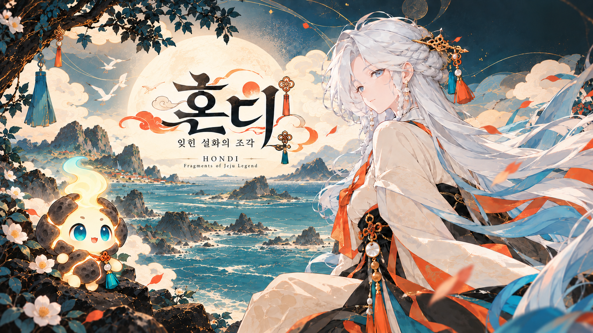
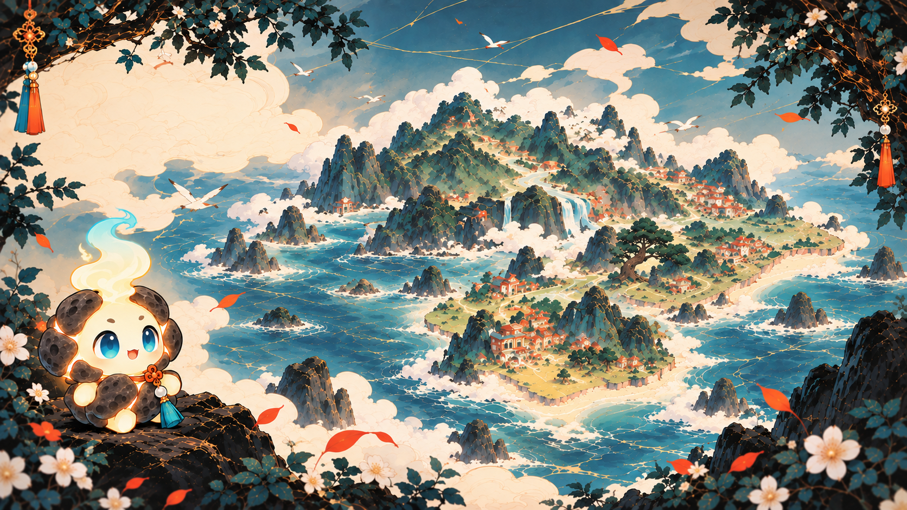
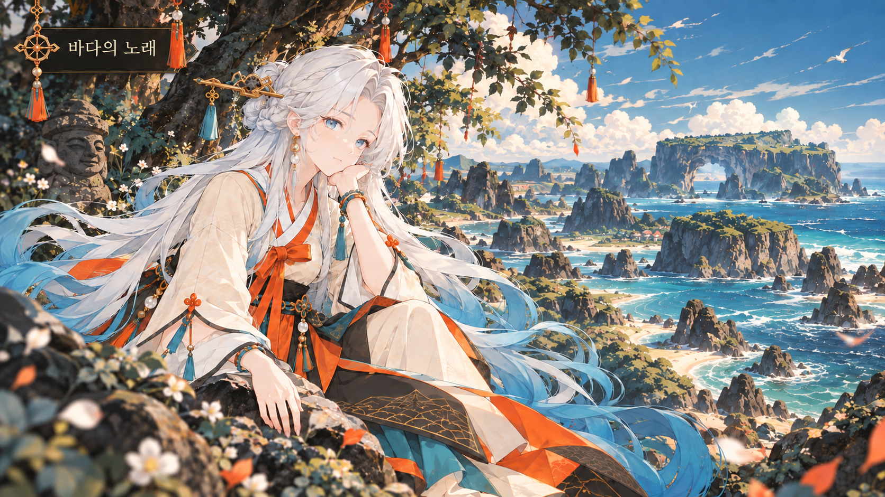

화면을 눌러 혼디의 이야기를 시작해 보세요.
혼디 소식
달빛에 흩어진 설화의 조각을 모으는 첫 번째 여정이 열렸습니다.
이어하기 기록과 음량 설정은 이 브라우저에 안전하게 보관됩니다.
기억의 기록
항목을 선택하면 기록을 볼 수 있습니다.
환경 설정
함께한 인연
잊힌 이야기 사이를 거닐며 당신을 기다리는 신비로운 존재.
인연도 첫 만남
여정의 물건
물건을 선택하면 설명을 볼 수 있습니다.
설화의 흔적
구름 위에 잠든 첫 번째 기억을 찾아 한라산으로 향합니다.
지나온 이야기

제주의 곳곳에흩어진 기억의 조각을 모아,잊힌 이야기를 다시 이어주세요.
어디부터 가볼까?어쩐지… 이곳들에무언가 남아 있을 것 같아.

……낯선 얼굴이로구나.이 바람을 따라 이곳까지 온 것이,우연만은 아닌 듯하네.